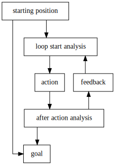

Mainpage
Summary
This is the summary page. If this doesn't make sense to you, please refer to the appropriate part of the backmatter.
- It is possible to build machines and processes that control precisely defined variables.
- Using surveys and correctly constructed questions, it is possible to control variables that are not precisely defined too.
- A feedbackloop looks like this:

- Combined, this means any problem humanity or any individual has, can be solved by this process.
- The only thing that is required for that to happen, is to fully and correctly define a feedbackloop and then to use it.